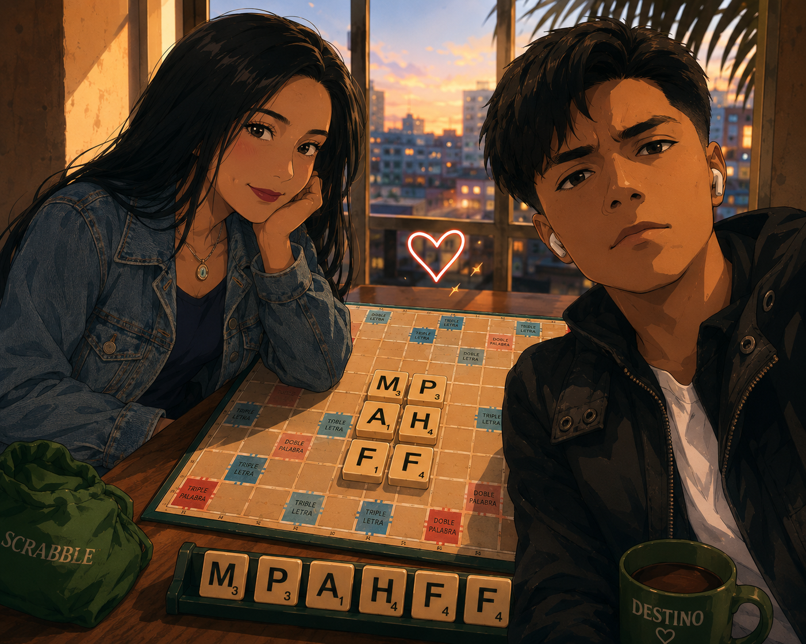

where it all started without anyone knowing

El azar de los apellidos.
No fue una elección consciente, sino el destino jugando con el orden alfabético. Compartir el apellido nos colocó en la misma lista, una que, sin saberlo, comenzaría a escribir el resto de mi historia. Recuerdo la extrañeza inicial y ese cruce de miradas donde el nombre de uno invocaba la presencia del otro. Fue como si el universo hubiera decidido, de forma casi caprichosa, que era imposible que pasáramos desapercibidos en medio de tanta gente.
De todas las aulas y todas las listas, acabamos en la misma. No sé si llamarle casualidad... pero creo que sí sé quién lo organizó.